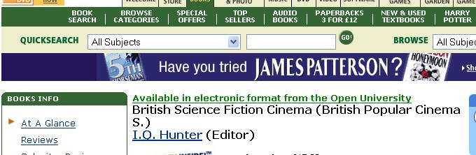

April 30, 2006
RefWorks from Google Scholar
As a precursor to a review of Microsoft Live Academic Search, I thought I'd better just have a quick look at Google Scholar to remind myself of what it offered, and noticed this feature on the Scholar Preferences page:

(As well as RefWorks, BibTeX, EndNote and RefMan are also supported.)
Why's this interesting? Well, RefWorks is offered as a service to OU students via the OU Library (OU/RefWorks).
Once you have set the reference export preference, an additional link is offered for each search result allowing you to imoport the reference directly into RefWorks:

Or should that be almost directly? I hadn't logged in to RefWorks for someitme, didn't have my password, couldn't get RefWorks to mail me a new one (or perhaps it did and email is taking an hour or two to get thrpugh tonight), eventually found my original RefWorks login info email, still couldn't work how to get in (perhaps it was in the Library documentation?), tried as a last resort to go in the group way, and Bingo!:

I have to go in via the OU group...
Anyway - once that hurdle was negotiated (my live OU SAMS authentication ticket seemed to automatically log me in to my personal RefWorks account) the reference was imported very easily:

Once in my reference list, my RefWorks account seems set up to try and provide seemless access to an electronic copy of each reference via the OU OpenURL link resolver:

It is possible to get an OpenURL linkresolver link embedded directly in the Google Scholar results page using a Greaseminkey script or suitable toolbar, of course, but that's the subject of another post...
April 29, 2006
Improved OU Library Lookup Greasemonkey Script
Last weekend, I stumbled across a Talis Silkworm Greasemonkey script which offered a nice way of inlining results (in Firefox only, of course) for various ISBN lookup and linking services (the script automatically creates links to Amazon, xISBN and so on). If you haven't see the effect of running this sort of script before, they also have a screencast showing their script in action.
Anyway, I couldn't resist tweaking the script so that it was locally OUseful, so here it is: OUseful ISBN enrichment Greasemonkey script.
And here's what it'll do to an ISBN in a web page. Firstky, it'll find ISBN numbers, highlight them, and add a 'window open' button:

When you click on the '+' sign, the ISBN will be used to pull a book cover down from Amazon, the ISBN will be passed to the xISBN service to see if there are alternative versions of the book (with different ISBN numbers) available, and all related ISBNs will be used to seed links to the OU library catalogue, the OU library ebook subscription catalogue and, and the Google and Amazon look inside services.

Note that at the moment, the links that are generated are done so without heed as to whether or not the book in in the OU library, the book is available for search/look inside at Amazon or Google, the the book is subscribed to in ebook form.
A fully working version of the script would therefore:
1) display whether or not the book is in the OU library (e.g. akin to the functionality provided by this Amazon/OU library lookup script);
2) display a link to the ebook directly, if it exists. An XML based search response should be easy enough to knock up, if this query for e-books is anything to go by. (Searching for ebooks via the custom ebook search form is certainly a lot easier than going via the Voyager catalogue.
3) Only display the look inside links if the book is available under that service.
As more and more web services come online, particularly via RESTful means (I'm guessing OpenSearch in IE will help drive this) the potential for client side web service orchestration can only get richer.
Just a couple of other things to note here - the above screens come from the Set books for Open University Courses pages (a service not totally dissimilar to my aging and unmaintained OUseful course book search service.
There are a couple of things worth remarking on about that page. Firstly, it's not maintained by the OU library, nor is the information provided by the OU library. (In fact, it's quite difficult getting just course book information out of the Voyager catalogue in an easy way (if at all), something that I believe is being looked at at the moment). Secondly, all the course book information is provided on a single monolithic page, with a drop down list but no search box to find the book information for a particular course - even with my limited talents, I'd love to have a go at redesigning this page just using CSS and a tiny bit of Javascript so the displayed area fits on a single screen with no scrolling. It'd be a really nice theme for a simple AJAX exercise too;-)
To that extent (AJAXifying the page) I whether the database that was used to generate the cocourse books info page is the one that feeds the course book information into the courses web pages (as reviewed in this post: OU Course Catalogue Takes Lead from Amazon?) and whether the information (and perhaps ebook links) are also fed into student's personal course pages? (Does ROUTES have links for ebook version of course books where avaialble, I wonder? I suspect not...).
Making course book information available in machine readable form through a simple URL directly (as well as via various simple URL based searches) would be a very handy way of transporting course book information around the OU and may also lead to interesting ways of using that info.
I guess I should look again at the OUseful Books Webservice to explore that area a little more.
PS The Talis script didn't work for me at first because it used the apparently broken onclick event statement. The fix was easy enough though: replace the expander.onclick=doExpander; assignment in the original
with expander.addEventListener("click", doExpander, true);
Social Bookmarking OPML Feed Roller
Update: now works in IE7
Update: multiple, independently named feed profiles
Try out the new OPML feedroller here.
Over the Easter break, I had a doodle with the Social Bookmarking OPML Feed Generator so that it now supports:
1) the ability to create multiple social bookmarking feed profiles;
2) the ability to generate the OPML text feed for any single profile or for all the profiles together;
3) a link to an online OPML feed for each single profile (so you can pass a URL rather than having to upload a file).

Editing 'saved' profiles has no effect at the moment (though it's on the to do list), and the visual profile builder doesn't work in IE (I've only done any testing of note in Firefox). Adding a client side save option is something else I'd like to try out. Each pass through the code I try to tidy it up a little bit more too - support for easy addition of new social bookmarking system feed URL generators is something that I'll be mulling over once the broken bits are all fixed!
As I won't have time to do any more on this for 2 or 3 weeks, I thought I might as well paste a link to what's available now: Social Bookmarking Feeds OPML Generator (workk in progress...) - deprecated in favour of the PDF linking iservice described below.
It's useable in Firefox, as far as I can tell, and half-works in IE. (If anyone can point out why the profile table isn't building correctly in IE7, please let me know in a comment. It seems that IE7 needs you to put dynamically added table rows into a <tbody> tag)
Update: PDF view now available using the rss2pdf.com service.

The PDF view version of the Social Bookmarking to OPML Feed Generator [DEPRECATED] allows you to view a PDF listing of the bookmark entries (including comments, etc.) in the feeds listed in single profile. Latest version here.
PS the online OPML feed generator appears to be misbehaving - and I won't be able to fix it for a week or two, In particular, it doesn't feed tag combinations (e.g. this+that). Instead, it splits the tags into separate feeds. Sorry about that...
April 28, 2006
Live Blogging with Instant Messaging, Plus?
The live blogging that I was trying out at the OU Learning and Teaching Conference over the last couple of days has given me a lot to think about, and I'll be posting my reflections on that topic in the next couple of days, but one thing I want to mention before I forget(!) is that it was not really live.
The way I was blogging was to take session notes (in Performancing for Firefox) and then post these to the OUseful blog at the end (or thereabouts) of each session.
To be really live, I would have had to be posting (and editing) the blog post every few seconds. There is a certain hassle factor associated wth this of course...how much neater if I could sign on to a blogchat room and use an IM client to post straight into a blog post, real time (or near as makes no difference).
That is, imagine a blog post to be a chat room transcript, updated in realtime.
I'm sure there are systems that already provide much of this functionality (I'm not really up on IM) but I don;t think I've ever stumbled across anything that explicitly claims to provide an IM blogging solution.
As to whether it's desirable or not, that's another matter (e.g. I always do a quick scan of my blog posts before publishing to try and root out the worst of the typos - although many still get through (I really should sort out a blogging client spellchecker!). This error checking would perhaps not be supportable ina trivial blogIM client...)
Just while I'm thinking about enhanced IM facilities, I'd like to mention a service I've yet to play with but have read many favourable reviews of: 37 Signals' Campfire small business chatroom cleint. One of the features that makes me want to try this service out is the ability to easily upload files to a chat room and refer to them (via a link) from within a message. This use of IM to discuss a document seems to be a very powerful feature.
The problem with IM is that is doesn;t readily support multiple threads (i.e. the flow is a linear one) although the ability to use chat rooms for both synchronous and asynchronous communications more than makes up for this, I think.
So - two IM, Plus services - one available now (Campfire, with file uploading (perhaps other IM solutions offer this too? I think some allow file transfer between conversants, for example?)) and one not, as far as I know (blogIM).
April 27, 2006
L & T Conf - Final Question Time
Chair: Linda Price
Panel: Lewis Elton, Steve Swithenby, Niall Sclater, Paul Clark, Josie Taylor, Pete Cannell
Are we on the move and in which direction?
JT - society on the move and going all over the place. To everyone over 25 the way in which under 25s are using technology is worrying.
SS - if T&L is on the move it's because we are reflecting societal change. In a cynical mind, one muight say that society seems to be moving towards a state where people are unwilling to commit necessary effort to learning. Society doesn't appear to value commitment to learning as much as it perhaps did in recent past?
LE - "the young are not what they used to be" - always was, is, and ever shall be. BUT there are now considerable commercial pressures driving chidlren's behaviour.
NS - new technologies can offer much, but why bother if CT don't take up the opportunities that the technology affords. May not be moving forward quickly enough; need to find time and space to experiment with new technologies.
Floor - world seems to be accelerating -do we need a 'slow learning' movement? Podcasts slow you down...(a Good Thing).
Floor - Non Scantlebury (Library) - are we moving too fast? Lots of content around, intitiatives to produce more content - but we need some structure in place to help manage content (scaffolding and architecture to allow us to manage that content).
PC - not moving fast enough in the way we reconceptualise relationships (e.g. in terms of course production and delivery). Students are using technology in new ways and we run the risk of excluding them by not keeping up.
SS - we are faced with new considerations, forces, needs - e.g. worldwide aspirations of OU.
To what extent will introducing the VLE have on our courses? WIll the VLE model support the current format of courses and if so how will that affect the development of new courses?
NS - no CT are being forced to use the VLE (?!?!?!?). First tranche of courses already going out on Moodle (37 by end of May [basically a revamp of Promises/OU Student desktop, which used to aggregate XML content, I believe...]) Wjhat will role of ALs be in course delivery via VLE. To what extent should ALs be supplementing production.
PC - VLE will provoke change but how radical that change will be depends on several things. How do we get students to talk together, work together, take responsibility for what they need to study, how will we help them achieve CPD and personal development. By asking those questions first, we should identify needs and then we can look to which technologies help meet those needs.
Floor - PM - One of the benefits of VLE is that it will allow us to track/monitor student behaviour and as such better identify what students are doing in VLE, how tnavigation can be better supported (backed up by ealier story - every pixel on eBay fornt page must pay for itself. High grossing/outperforming pixels get moved up the page.)
JT - course terms should know why they are using a particular medium/technology.
LE - there is too large a gap between OU and trad universities. Other universities don't learn from OU (or each other) where we do have a strong emphasis on learning design and pedagogy; OU course developers don't have close enough contact with students.
SS - OU being watched with interest in our adoption of the Moodle VLE. "The Moodle model of learning is not the dominant model of learning we use in the OU" So do we subvert Moodle, or do we shift the way we teach in the OU to the Moodle style? In the latter case, there are profound changes required of CT and ALs. If we change our model we have to go for it hard internally and outside.
Floor - change can't happen overnight.
NS - Sees excitement, cynicism, conservatism around the OU. If the OU were being started today, what model of learning and teaching, student behaviour etc., would we be trying to establish.
LE - move from teacher centred to student centred learning is a big issue for HE.
Floor - CP - differences between production and presentation CTs, and the way they are likely to view the move to Moodle. E.g. should more resource be provided to CTs so they can re-engineer courses in the move to Moodle.
PC - Faculty must decide where resources are allocated. There is a problem in course production, courses do take too long to produce. Should we go for enhancing courses, vs. creating new material.
Floor - (an AL) - concern that ALs are going to have to go and buy into broadband, buy equipment etc. so they can support a big elearning push. Are they going to get the resource and staff development they need?
?? - Plans are in place to provide ALs with staff development and training to give them the expertise they'll need.
Floor - (David Robinson) - technology enables us to blur the distinction between production and presentation. Courses can become responsive [rolling rewrites?]
Floor - (Doug Clow) - Moodle seems to promise live course updating. how will this be managed in terms of workload planning in Faculties?
SS - Depends on patterns of working within individual Faculties. an ongoing/direct conneection between students and CT would be good. Requires major changes to way in which production works.
Andy Lane - there are changes in production, e.g. OU Web Certificate courses are being produced in a just-in-time fashion, CT do provide conference moderation, there are no ALs. Question then is is how we manage a consistent student experience across courses.
Role of assessment in courses with online collaborative discussion activities.
LE - assessment should not distort the learning or the work that precedes it. The assessment should fit around the working, not drive it.
JT - no good models as yet for assessment of mobile learning.
PC - problem of collaborative group assessment is relevant across HE. Advantage of doing it online is that you have a dtaa trace of who did what, when. But it's not clear how to make use of this
NS - assessment should drive learning. Students look at assessment then do coursework to meet those ends. Work is pointless if it isn't assessed. If discussions are scheduled and not assessed then students won't particpate in them.
LE - student perception is that if it isn't assessed it's not worth doing/don't take it seriously.
What will be most siginificant development for OU in the next 5 years?
JT - open content, Moodle
NS - VLE (Enterprise content management system is mentioned by others)
SS - open content, huge increase in collaborative production of resource. Working in larger teams with members outside the OU.
Are there too many dinosaurs/outdated processes in OU?
PC - any institution with history like to OU has a legacy, and there are always issues re: managing change in that sort of environment. Process of change may in part be a zero sum gain . Do we have too many people committed to old model? Who knows...But there is a lot of commitment and belief in OU mission.
NS - lot of old bodies and young minds...
LE - hstill have a lot to offer.
SS - organisations can reinvent themselves by spawning new structures and we may have missed a trick by not spawning off small institutions with a blank slate.
JT - not dinosaurs, as mad as everyone else :-) Still a very democratic organisation.
L & T Conf - Anne Hewling - Personal Repositories
Personal Repositories Online Wiki Environment - PROWE
JISC project, with Leicester(?)
CPD for ALs using wikis and blogs (was known in he past as the 'bliki project').
What kinds of sharing do we need to support for ALs (and are they interested in sharing)?
How do ALs expect repository based models to work?
Originally told ALs about blogs and wikis, rather than asking what ALs knew about social software and ways of using it (i.e. initial approach was presecriptive about how to use blogs/lwikis, rather than drawing on people's prior experience (if any) and/or their expectations of social s/w.
OU has more than 7000 ALs, Leicester approx. 300.
Leicester moved to Balckboard in 2005, OU moving to Moodle currently.
User needs assessment; tools assessment.
elgg (OU) and Plone (Leicester) testing environments.
elgg has personal repository support (up to 5Mb personal file storage) as well as group support.
Is the environemnt appropraite for what users say they want to do (also, is what users say they want to do what they actually (want to) do?)
Matters arising:
- what is a typical tutor and what are their typical needs? (v different across OU and Leicester, within OU
- PRMS (?personal repository management systems - how people manage personal repositories at the mo)
- why should people move to knew forms of personal knowledge management if the proposed methods (blogs'n'wikis) are not proven
Tagging posts (?and repository uploads?) is encouraged. Tags are displayed using a tag cloud.
Personal repository items can have an acces list associated with them
Looking at linking out to e.g. Writely for collaborative document creation rather than a wiki.
??is there a social bookmarking component in elgg, though you can subscribe to/aggregate feeds within it (I can't check - I'm in the OU Library at the mo and whilst I can see the open/public Enterprise wireless network, my 'connectivity is limited' and I can't actually access anything...hmmm - every else on campus the Enterprise AP works fine...)
Current experience is that people aren't using these personal learnig repositories.
Chris Pegler (in repsonse to Karen Kear - 'tutor's do share resoucre in FC confs') - OU tutors do share resource, e.g.via tutor FC conferences, but if content ets locked in the tutor course conference for one course and you want to access that material in another course, you can't...
L & T Conf - Andy Lane - Open Content Initiative
Why Open Content?
Wide range of content forms (documents, audio, multimedia etc.)
OU/BBC relationship means we have a long history of broadcasting 'open content' (free to view/consume/access, open2.net, OU materials in libraries etc.)
Open Content licensing is broader than just free to read - users can rework content etc., redistribute it, reversion it, if they share it on and acknowledge where it came from.
There is a Widening Participation agenda.
OCI can be a testbed for elearning tools.
Research and evaluation of the project is a significant part of the project - how do we do it, how wo people engage with the materials.
OCI may be a way of drawing materials in from other organisations.
OCI structure - ready to go materials in one store (the 'showcase site'), active reworking and remixing of materials in another area ('Playspace site')
'Showcase site' - chunks of open educational resource (3-15 hrs study time of self-contained material, labelled at a given HE level, 80% study time, 20% learner thinking time). Will contain samples of OU material.
Chunks also grouped to form 'courses', all at same HE levle [?hmmmm - not sure about that - what about modules offering progression across/up levels?]
900 hrs at launch, 5200 hours by 2008
"Playspace site" - supported open sensemaking site for creators
Library of learning objects
Course creation and management tools
Archived course material, loosely chunked/less structured
Material form other developers
Implications for teaching:
creation of envts and opportunities from which and in which to learn
Resource based learning with interactivity
Tuition and support separate from content
Different versions of same content for different contexts.
Curriculum design in content rich environment (how to remix from 3rd party content).
?Are we moving more to service (assessment and support) and away from tuition/content delivery
Prediction (guaranteed!) that on day 1, in October, material will be pulled out of the playspace site and translated into other languages. (?so surely there should be localisation areas of playspace that are based around different languages? Wil the environment be localised into different languages?)
Implications for Learning:
Need to judge an appropriate mix between , pedagogic support that is built into materials (e.g. SAQs), personal support (reflection, learning style), peer support/social networking, professional support
Importance of social computing in facilitating support/interaction
Co-creation of learning experience (?and self-creation of 'courses' - ?people who used this also used that? ?how can we track/reflect links/pathways between small chunks that users create themselves?)
Educator as 'learning broker' cf. travel agent (I can assemble my own package holiday, or I can go to a travel agent and get them to help me.)
Floor (Josie Taylor) - content has always been available, but 1) structured learning hasn't followed. What's going to be different in the OCI/OU site? and 2) Some students are likely to flourish and be driven by assembling their own teaching and learning strategy by assembling groups of chunks.
Floor (Niall Sclater) - of content is ubiquitous/widely available, how can we continue to justify the expense involved in producing out high quality OU content?
In the marketplace, there are people who aggregate effectively and become well regarded/trusted as a result (e.g. influential blogs). One OU advantage is that we know how to assemble content into courses.
L & T Conf - Niall Sclater - Blogging & Podcasting in the OU VLE
First 20 mins of talk given as a podcast...
I'm not going to blog this becuase you can listen to it here...
(Interesting - I see Niall has: 1) switched comments and trackboacks on his blog off; and 2) taken down comments that had been made - including at least one of mine, which I don't have a copy of. This makes me think - who owns the comments on a blog? (spam comments don't count!).
But I will observe how as the podcast provided the audio presentation, Niall was on stage, at the podium, clicking through Powerpoint slides (images, not text) at the appropriate point to illustrate the talk. ?so why not use SMIL or something similar? He had the audio track, had the timing info etc... Hmm, are there SMILy powerpoint solutions? could S5 be used with SMIL? Here's one take on it (this RSS2S5 approach also looks interesting...)
The talk has moved on from a discussion about podcasting, and how it may be used in education - to blogging. Is thetre going to be a mention of the role of comments I wonder?;-) Yes indeed - it seems there was a lot of spam, but also questions to the blog about matters best not argued in public. (As a result, it seems that Moodle blogs are for students to maintain personal logs, forums for discussion (so commenting will presumably not be part of the Moodle blogging system?))
I asked at least one of those questions to Niall's blog (commenting at the time, I seem to remember, that it was probably overstepping the limits and that the OU VLE Programme blog would perhaps be better sited within the intranet), and received no email reply or other acknowledgemt, nor a message to say that comments were all being taken down, or that perhaps my questions were not apropriate... hmm...I have an internal blog - behind the firewall - where I can post stuff that is relevant internally but perhaps too sensitive to be blogged publically?
I have been umming and aahing about whether I should be posting these notes internally (the live broadcast is open for intranet users only) but i have - on balance, taken the stance that a lot of the issues being discussed are generally relevant. There have been one or two things that are internally sensitive that I have witheld, and one or two things that I was a bit twitchy about posting, so if anyone thinks I have overstepped the mark please let me know.
L & T Conf - Paul Clark
[I missed the first 5-10 mins]
(Half recalled from while the laptop booted...
Elearning will allow us to move to a more activity based learning.
Competittion
Univ of Leicester
University of Liverpool
A.N.Other
New, new technologies
e.g. Skype)
Changing Customer-Information Relationship
Move towards providers using a range of channels
Increasing personalisation and user customisation/choice of what they receive from where by what channel
How will this impact onstudent expectations of online learning?
Speed of change [but witness Tom Coates blogging earlier today (Is the pace of change really such a shock?) about how media technology change has been happening for years - and is the norm - in media sector]
- disappearance of video
- reducing DVD cost
- podcasting arrived last year, Skype this
"How do we marry our production times with the speed of technological change?"
Educause view ofelearning 2005-2010 (Educause)
Social computing, personal broadcasting one year away.
educational computing a couple of years away
Four/five year orizon - context awareness
Student view
www.netday.org/speakuo_for_students_2004.ht#visions
Small devices, universal ownership, collaborative learning, gamelike learning
OU is in extended period of change wrt L&T
Need to react to student, employer and govt expectations
Speed of technical change makes delpoyment and evaluation difficult
Impact is a combination of many factors
Print model worls but looks dated in comparison with competitors
Tension between pedagogy and deployment in new technological forms
Tension between OU as academic institution and a business
"Quality is the bedrock of our success".
L & T Conf - Josie Taylor - Supported Mobile Open Learning
Futurist views of computers from decades ago were wildly out (e.g. Watson - need for no more than 5 computers).
Academic worries - what are benefits, how do I keep up, etc.
What's the relationship between societal and technological change - are we technology led or do we drive technology?
What are future learning contexts likely to be like? What are implications for learners?
Change is inevitable, but in technology it's not always obvious is what is (likely to be) stable?
Surface presentation - affordance (what you can do with me - function is same, but how you intereact may be differnt) - e..g podcasting is not so different to audio tapes we have used for years
Accessibility/delivery mechanism
Functionality (technology led)
Functionality required by learners (learner led)
For learners, they is something they would like to do, and we need to tap into that potential.
Pre-1935 - good books hard to come by unless you were wealthy or had a library card, then Penguin introduced cheap paperbacks.
Readers became buyers, wider range of books, books appear in railway stations, chain stores etc.
Allan Lane (Penguin) believed there was a market for books...
Publication became mobile, access ubiquitous, uniform cost, but functionality remained same.
Changing availability of books is one innovation but not end of book innovation.
So what's changing today?
'People power', user generated content
Technology building on functionality and technology that already exist, making things we do already easier (e.g. iPod). Butr functionality is same as with making audio tapes for personal use etc.
Move towards ubiquitous connection to net, ambient connectibry, flow (?across context?), interconnectedness/interoperability
Towards: semantic web, the grid, ubiquity, personalisation
Learning context of the future:
Intelligent networks, semantic data
Self-configuring/repairing networks
Self-modifiyiong coe (?!)
Grid technology - access to data, mashups (so data grid, I guess?)
Compliant learner (viewer/listener) is no more
Conversational aspect/two way relationship important
Does the role of teacher need to change - e.g. 'co-intentional learning' - dialogue between learner and teacher (but doesn't scale well).
Increasing information becomes overwhelming, needs to be managed.
Need to be able to deliver over a range of channels/to various paltforms.
"Ringmaster" - orchestrating the mix.
How to cope as teachers with technological change:
- specify what you want
- collaborate
- don't focus on technology per se
Focus on functionality, find out what people want to (be able to) do
Specify required functionality, mock it up (rapid prototyping), test it, re-specify it, re-test etc. Find simple ways of sharing klnowledge though stories.
e.g. GReTL (Geo referenced teaching and learnig, Jonathan Silvertown (current OU project - public page)).
Technology makes GReTL easy (we've always done it, now we can do it big time. The functionality is not new, T&L outcome is the same, but the technology enables us to do it bigger, better, scaleably etc.
A Model of Mobile learning.
Does making learning mobile make it different to just learning?
Sharples, Taylor & Vavoula - a learning model for mobile learning (? paper).
Conversation and context are essential constructs.
Draws on Pask's Conversation Theory
COnversation drives process of learning
Focus of investigation is conversation students have with ???technology, knowledge sources, other people?
[There's just too many words, too mnay pictures, too many slides...]
How does a technology failure with a 'conversation' affect a learner.
(Triangle Theory????????)
OU Currently leads Grand Challenge 'Learning for Life' - paradign shift is required
As a university, we don't know what we know (poor at knowledge sharing), are often our own worst critics, have a good external reputation, shouldn't argue about whether we could/should use technologies - students want it...
Questions - how do we develop AL skills to use new technologies for learner benefit?
JT - current IET/Library/KMi project looking at AL CPD [was the 'Bliki project - I'm not sure what it's called now?]
April 26, 2006
Towards a Virtual PLE? A Social Web Aggregator Service
Way too many posts today - here's the last (I'm trying to clear my open FF tabs..!) GROU.PS:
* GROU.PS is a social groupware. Briefly, it is a sharing platform for social groups.
* GROU.PS responds to growing needs coming along with Web 2.0 revolution. ... * Besides, in order to prevent duplicate efforts, GROU.PS can abstract distributed popular service providers like Flickr (photo sharing), del.icio.us (bookmark sharing), Digg (bookmark sharing)...
...
Abstract for No More Migration Hassles
To enjoy GROU.PS advantages, you don't need to change your favourite bookmark, photo, blog service providers. GROU.PS can abstract and synchronize with them; you just enter your login information.
Universal Wrapper
Want to extend the capabilities of your existing Yahoo Groups or Google Groups account?
You can easily do so simply by entering your login information and answer a few questions. GROU.PS wraps these services and handles the rest.
This list of services they wrap is a good satrt, covering Google mas (no Yahoo! maps option?) Typepad, Wordpress and Blogger blogs etc., Flickr (how about Riya?), del.icio.us, Digg and Reddit, with 30 boxes and Google calendars on the way and more promised.
The virtual/personal desktops/startpages (whatever...), such as Netvibes or Pageflakes, are showing how readily feed'n'API based services can be displayed together, and GRO.PS appears to betaking this form of integation to the next level - in particular, a functional one.
So, this is just the sort of thing I had in mind when I blogged (opaquely, perhaps!) about ad hoc learning communities.
Of ocurse, as with the best online services, it's sometimes handy to have a desktop client too, a role that something like the Plex PLE (screenshots here) may be able to play?
Google Promotes Firefox
I try not to post too many news item relays, but this is something that I think is important (form Battelle - Google (in the US, and only to IE users...) promoting a Firefox download on the Google frontpage:

What's particularly interesting (and I haven't been able to check yet) is the implication that you get the browser with the Google toolbar preinstalled.
I've asked internally why we don't do that with OU useful extensions, e.g. on the Online Apps CD (one reason I was given is that some students can get upset when they install a piece of software that trashes the profile they have set up on previous versions of that software). But I'd have thought we could get round this by setting up an OU user profile, and providing an easy way for students to launch their browser into this profile (can we do that easily with Firefox?)
Also related to this is an issue brought up in one of the Learning and Teaching conf sessions today (and something I've thought about often before) which is (access arguments aside) are we denying our early technology adopting students powerful tools by not developing tools that only run on modern browsers?
When IE7 comes out, and hopefully gets installed onto XP boxes via the automatic updater, there will be significant opportunites for us to pump RSS/Atom fed information to our students. But we won't be able to do this for students running old Microsoft operating systems (we can use FF etc. as well, of course, for a bit more platform independence).
The OU's scale plays to our benefit here - with 180, 000 students, even if only 5% of the 10% who use Firefox make use of a Firefox extension we have provided for them, that's still a population of almost 1000 users who can test the extension for us.
One thing I'd like to see - and maybe this isn't so unlikely.... - is OU labs, a technology playground akin to Google Labs or Microsoft Live Labs (Yahoo! buck the GYM trend by going for Yahoo! Research) - only even more of a sandpit;-)
I did check - http://labs.open.ac.uk/ is still available ;-) - although being a university, I guess that URL could be misconstrued as relating to academic (chemistry, biol;ogy etc.) research labs...
Google Search History
I've known for some time that Google have been recording my search history on those occasions when I have been googling whilst logged in to GMail, and it hasn't really bothered me too much on privacy grounds (there's going to be some paypff for me in usability terms, right?)...
... and I wasn't that bothered when I read this post: How Much Do You Google? in which Joe Schmidt commented on how he'd made 6357 searches over the last year (more than 17 a day...).
But I have to admit, when I saw my own results at http://www.google.com/searchhistory:

I got a bit twitchy... Seeing this record of the "negative searches" I'd made, as well as the links I'd clicked through, seemed potentially to be a bit too revealing...
(I use Google far more than the search results would imply - a lot of the time I am not logged in to my Google account...)
There are a couple of payoffs, of course. Firstly, you can get an RSS feed of this information:
1. Add a new feed with https://www.google.com/searchhistory/?output=rss� as the URL. 2. Since this is a secure feed, find the option to enter a username and password, then enter your Google Account username and password.Ref: Google Help Center
Secondly, there's the option to search your history.

If you find the results are skewed byu links you followed but discounted, it's always possible to remove them:
After clicking on the "Search History" link at the top of the Google homepage, click Remove items. You'll then be in edit mode and can remove any items you don't want by checking those items and clicking the "Remove" button. There's also a link to clear your entire Search History
I suspect this is all a move towards an even richer Personal Search option which mixes results from clicked through links made on your own searches with bookmarked links (yes - Google does have a bookmarking serivce now, where else but at http://www.google.com/bookmarks):

Note here the option to Search Bookmarks rather than Search History.
What I haven't seen yet (I don't think) is a Personal Search that combines results from these two services.
Certainly, the provision of the Add Bookmark bookmarklet at the bottom of the personal (history) search page is anything to go by, these two services would both seem as if they will be lumped together.
Social Bookmarking Workshop Slides
As part of a two day (today and tomorrow) OU internal Learning and Teaching Conference(which I've been live blogging throughout the day - see previous few posts) I gave an hour long workshop today on social bookmarking.
The workshop was an interactive affair - the participants all ended up using a locally hosted version of the open source Scuttle social bookmarking system - so it will be useful to see how mnay people carry on using the system after today.
If anyone would like to see what was covered here are the slides. I will try and add more notes to the slides over the next few days.
I've also popped up a (silent, for the moment) screencast about how to installing bookmarklets on an IE toolbar.
If anyone in the OU (faculty reps, regions, whoever) - or even anyone outside the OU - would like me to run a version of this workshop, with or without an associated discussion about how we might use social bookmarking in an OU context - whether for course delivery or for internal knowledge sharing/management - please get in touch.
L & T Conference - Afternoon Question Time
Panel: Dennis O'Brien, Mike Sharples, Ormond Simpson, Kathleen Gilmartin, Linda Jones, Paul Clark. Chair: Linda Price
Are we on the move?
OS - lots of recent failed e-universities
MS - Nottingham having an outpost in China(?); people have more mobile/access to mobile technology, micro-content, micro-interactions with technology, often in particular context.
DO'B - things should be (designed to be) useful; let users play a role in design.
LJ - who/what's on the move? People, OU, etc.; migration towards (significant) online components but delivered in a blended fashion. In OU context, a) worry that combined demands of teaching, research, staff development are a constraint, particularly at a time of innovation e.g. with Moodle adoption; b) buzz about how technology is and can continue to build communities.
PC - what are the ways in which we can provide rich experiences and reach new audiences using networked technology? Move towards getting OU students to discover resources (i.e.a move to more independent learnig contra the perceived traditional view of the OU of providing everything in the course pack). How do we develop community involvement/particpation/working/collaboration/collaborative learning(?)?
KG - Must find ways of accommodating student choice (e.g. in ways of communicating with them - via SMS etc.); easy to find contact/support information (i.e. effective online support network).
Floor - will our learning models work in international market?
LJ - currently working with Arab OU, but adatptation only a superficial level (not changes to learning design). How can we reach out - case studies offered significabt promise here (?for regionalisation, I guess=?)
Floor -If we teach collaboration, how do we distinguish between collaboration and cheating in assessment?
MS - small group learning; group assessment. Tools to support informal group working.
The OU has developed an effective model for distance learning. In an online context, does the OU have the right balance between funding the provision of content and support?
PC - we produce a lot of print. Do we have the right balance between print and e.g. actvities or independent resource discovery, and do we support that mix in the right way? Need to limit the amount of material we produce for students (prevent content overload). Need to re-evaluate how we develop independent student learning.
DO'B - ALs not paid enough, see themselves as central part of support network. Working for OU is about enrichment, not riches. Learning not about content, about support and removing fear. Support network motivates student and is the driver of their learning. Human communication in open environment (e.g. tutorial) can be threatening for some users who are happy messaging/living through an online persona.
OS - Phoenix is one of success stories in elearning world, and part of their success may rely on the weekly tutor phone call to students... may get a profit from increased support because of inmproved retention that arises as a result.
LJ - Ou model is not one of 'content is King' - far richer and discursive than that (e.g. tutorial in print, self-assessment questions etc.) Our content is not just facts....
Floor - missing generation (older generation) does not have skills that let them exploit new technology. I.e. the technology learning curve is disenfranchinsing particular demographic groups.
Floor - do we practise what we teach in terms of using communication technologies?
PC - not necessarily engaging with new media - blogs and wikis etc. It would be instructive for us to use these technologies.
Floor - VLEs are moving towards monolithic environments. Students have a variety of learning styles and do not necessarily want to be tied int o a particular forced way of working. How do we reconcile these?
MS - monlothic VLE tool is just a phase we are going through. The move is towards toolsets of components that can be combined in many different ways. VLEs need to be broken into parts and recombined with components that exist outside - mashing VLE components with third party compnents.
Are we going for a toolset VLE?
PC - yes - we are going to have a VLE made up of component tools, which is why we didn;t go for Web CT. We are not going for a monolith. ... Moodle lets us mix components. Can the tools be adaptable to the individual? Can we deliver content for different platforms? (e.g. as BBC lets people consume via TV, web, mobile etc.)
OS - problem of access. Approx 55% of UK households have internet accress, concentrated in middle class. Potential pool of OU students will be reduced by nearly half by requiring online access. Are we being ethical by requiring student online access, given our access mission?
Floor - students find workarounds where our technology is not what students want - e.g. students using Skype. We can't stop students using technology.
MS - IT sys admin problems using Skype. [BUT OU STUDENTS USE THEIR OWN MACHINES, NOT UNIVERSITY NETWORKS!]
Floor (Doug Clow) - are we being ethical if we DON'T develop student online skills?
LJ - elearning policy has been developed to accommodate access issues.
Floor (Chris Pegler) - looked up stats using wireless access in room (BRILLIANT!!!): rapid significant growth in uptake of network access since those stats.
OS - yes, but only slowly. Curve is peaking...
Floor - can we provide shared access through partnerships with businesses, other institutions, mobile devices, etc.
Floor - Library 's have internet access.
OS - only one pilot project seeveral years ago wrt library intenet access, and it was a failure.
PC - OU library working hard to develop relationships with other academic libraries.
Floor - OU timescale for elearning stratey is not consonant with apparent timescale with which interent access is becoming available.
If the panel could move T & L strategy forward at a stroke, what would panel wish for?
LF - time; pressure in researchn student numbers; need time to absorb (implications of?) new technologies - an extra year.
DO'B - Doing H805(?)
MS - More time to talk to learners about learning technology design
KG - help learners cope with encroaching complexity in service provision. Ability to offer personalised learner support/personalised communciations model.
OS - start learning from research; renegotiate AL contract; stop spending on rebranding and have coherent programme for talking to students.
PC - more time to talk to one another.Knowledge is siloed in OU. Don;t seem to be able to have time or capacity to share internal knowledge. More time to share good things and the things we should avoid.
L & T Conf - Kelvin Street - Recent Library Apps for Business School Students
Business school has a multimedia tutorial [a screencast, essentially] on using online library apps (e.g. for B830).
Link from course page to multimedia resources on How to do a literature search (essentially slides with audio and with mixed in screencasts shwing how to use a particular catalogue (e.g. Business Source Premier)] Rather than providing a generic info skill training product (e.g. Safari) the idea of these training packages is to provide specific training on using specific databases appropriate for particular courses.
Student feedback - students would like interactive online tutorials. E.g. after a screencast demo, let students try out a real database search.
Enocompass and LinkFinder Plus working in tandem (Encompass providing federated search, and LinkFinderPlus then linking through to online version of paper, where available. However, for some databases, it seems that the LFP will take you to a page where you still have to do work (e.g. it will take user to a Journal page and they then have to find the article by hand - yuck!).
Click through from course page straight to an ebook. Students can look at each page, but limited as to what they can print off at any one time (e.g. print a page at a time). Many ebooks are searchable (often much quicker then using an index). Ebooks limited as to number of concurrent users (e.g. typically 2-5 users). The "loan period" can also be specified (e.g. on www.netlibrary.com log a book out to a student for a couple of hours.
ROUTES embedding via XML feed into course web pages (e.g. B853).
L & T Conf - Steve Armstrong - Enhancing the Brand Through Podcasts
Background
Move away from mass broadcast.
Origins of podcasting in blogging (audio blogging).
Syndication via feeds, subscription model etc. etc.
Enhancing the brand
Podcasts good for:
- language learning
- facilitate self-paced learning
- support students with disabilities
- record conversations from Skype (e.g. using Audacity)
- richer learning environment
Brand - not just the logo 
More about, products, services, organisation
OU well known for its BBC relationship [e.g. check out &Open2.etc]
Advertising plays a role in communicating the brand, but so does student experience (word of mouth marketing follws etc.)
Perceived values about brand.
Brainstorming for podcast content ideas:
- user survey on contentious issues (e.g. ID cards), invite users to compare their responses [?community podcast network?]
- tantalising facts
- tools/tricks of the trade
Follow up activities - quizzes, diagnostics, tasters etc.
Potential benefits -
- make OU more attractive to younger students
- filler content (improve retention) between registration and start dates
- enhance relationship with BBC
- exploit current debates
- add to learning variety
- potentially low cost (e.g. free persoanl audio tools etc.) [but what about production values?;-)]
Subscription also supports videoblogging/vlogging/videocasting.
Podcast to mobile devices.
L & T conf Keynote - Mike Sharples - Beyond Mobile Learning
[Live blog]
Beyond Mobile Learning - Mike Sharples
Informal online networking - e.g. social networking sites (MySpace, Bebo)
Many useful skills implicit in social networking - communicaiton skills, networking, teamworking, online research etc.
Conflict with formal education - disruptive devices (e.g. PSP in lecture room), disruptive sills - informal networking, knowledge sharing
Reaction lifecycle in schools/HE- ban the technology, welcome it, manage it
Tension between informal networked learning and formal institutional learning.
Djanogly City Academy at Nottingham - school built around mobile technology. Middle school; 11-14 All kids have tablets, wireless linked to data projectors. NO interactive whiteboards! Plasma screens to displat students' work. Spaces for small group/informal learning. Technology stays at school (no laptops go home...)
Learning with portable technology (PSP in classroom) or learning across contexts (learning across time, space, context etc.)
Mobile learning phase 1 -
ebooks, classroom response systems (voting etc.), datalogging - focus on handheld technology
Phase 2 - learning outside classroom (learning in multiple contexts), interaction between formal and informal learning
Mobile learning - what works
- classroom response systems
- laptops/tablets (increasing suppport for wireless in e.g. lecture rooms)
- SMS alerts (considerable scope for delpoyment in e.g. Kenya where widepsread availability of mobile phones, if not fixed telecoms network/widespread computer availability, unreliable surface mail). Good for co-ordination and management.
- SMS revision questions (BBC Bitesize)
[Several examples of simple group working using mobiles in classroom setting. A question that concerns me, as with classroom response system, is where do you get benefits by virtue of using the technology instead of 'traditional' techniques - hands up, verbal group discussion???]
Just handing out PDAs doesn't work. Communicaitons are important.
Third phase - beyond mobile learning - trying to look beyond the gadgets to
Contextual & ambient learning
Mobile learners, designed learning envts, informal learning
Mixed reality learning -
e.g. MyArtSpace (making school museum visits more interesting).
Problem with school visits is: often no pre- work, no post- work. Visit is standalone activity.
Combination of personal (mobile phone), physcial space (gallery/museum), virtual space 9online gallery.
e.g. pupils visit gallery/museum (e.g. D-Day museum, Portsmouth - problem oriented learning (e.g. were D-Day landings a success))) and collect info relating to a particular topic and log it with 3G phone. Presentation using collected info/exhibits when back in school.
Exhibits are tagged - exhibits can be adding to personal collection by using tag via mobile to add exhibit to personal online collection.
Pupils become curators, creating their own interpretations.
Contextual learning - learning across contexts
Delliver appropriate content e.g location ased guides
Activity in context - e.g. datalogging
Services in context (commercial driver for many of these - e.g. location aware services)
Customised content/interfaces
Context may be a dynamic and historical contstruct.
Make links/connections between physically removed artefacts in museum by walking between them. Mobile devices can prompt those translations in space/physical movements by the visitor.
Location aware devices can deliver appropriate content for particular locations (via GPS) sa well as promote the user to move between locations.
'Heads up' not 'heads down' interaction - 'walk up and listen' audio.
[Mobile device should enhance the experience and add value to an exhibit, not describe explicitly what the user can obviously see.] Tell the story behind the exbiti. Point out things you wouldnlt see unless they are pointed out to you.
Ambient learning
DIgital artefacts to augment envt and enable learning - large public screens, virtual graffiti
Design/develop 'technology enabled learning spaces' (e.g. do more than the blue plaque)
The Future:
- lifelong learning support: need to design a mobile lifelong learning envt, not a mobile office environment which is how e.g. a laptop is typically set up.
- environments that teach about themselves
- location based social networks
- Wide area educational gaming (e.g. in Japan, mobile phone cells contain treasure items, users have to visit cells to coolect treasure, and then they can share it. One side effect is that this is affecting e.g. commuter routes as well as encouraging people to visit locations off the normal tourist trail.)
April 24, 2006
Web-based Presentations
I just picked up on Teamslide, a (commercial) web based presentation system (via Ajaxian) that lets you give a presentation remotely over the web, and it got me wondering about S5, Eric Meyer's "standards-based slide show system".
If you haven't come across S5 before, here's a brief description:
a slide show format based entirely on XHTML, CSS, and JavaScript. With one file, you can run a complete slide show and have a printer-friendly version as well. The markup used for the slides is very simple, highly semantic, and completely accessible. Anyone with even a smidgen of familiarity with HTML or XHTML can look at the markup and figure out how to adapt it to their particular needs. Anyone familiar with CSS can create their own slide show theme. It's totally simple, and it's totally standards-driven.
So - given that, I was wondering how easy it would be to write a simple AJAX based IM like system that would let me present an S5 presentation at a distance?
Everyone watching the presentation would connect to the same chatroom (presentation room) and download the whole presentation (a single file, remember) into the presentation/IM client. The person giving the presentation would send the 'next slide/previous slide' commands to the presentation room, as if sending a message into the chat room. For everyone else watching the presentation, their client would poll the chat room every few seconds to see if there is a new message' (i.e. presentation command). If there is, the command would be pulled down and used to step on (or back) a bullet point/slide etc., as required.
These seems like it should be easy to do - after all, IM is supposed to be an Ajax 101 project, so this can't be all that much harder...?
If only I had half-a-day or two free to try it and see...
PS S5 Presents looks like it may provide an easy way in to writing S5 presentations.
PPS another online HTML presentation solution - the comprehensive HTML Slidy (via Brian Suda)
Customer Participation at Amazon.com
Ever since posting a quick review of the OU course catalogue (OU Course Catalogue Takes Lead from Amazon?) I've been meaning to have a scan through the Amazon.com site to have a look at their tags'n'wiki features.
As it's the (first) end of a long day (before the evening and midnight oil sessions begin:-( I thought I'd spend coffee time seeing just what they've been up to...here's what I found (using no page in particular):
Tags 
A typical implementation, it seems: tags may be public or private and used for personal, or shared/social, (re)discovery of an item. Tags can be used for pivot searching - finding items similar to one you have tagged in a particular way by means of looking at what else has been tagged the same way, defining persoanlly meaningful categories and so on. Tagged/bookmarked items can be used as an informal 'not quite Wish List', although it seems that [i]tems you tag will be used as sources from which to make personalized recommendations..

I'm not sure how useful these tags are, or whether tags would be appropriate in an OU setting if applied to courses/for course choice? Certainly they are useful within a course, when used to bookmark resources relevant to a course, but for course choice, (which is intended to be the focus of this comparison between Amazon and OU catalogues) I think not...
Wikis
Two types of wiki entry are supported: wiki term definitions, which are entries that may be relevant across a wide variety of product wiki entries - for example, author biographies or details of a publishing house; and product wiki entries, which are tied to a particular product.

I'm not sure what happens in the case of different versions of the same product (e.g. the same book with different ISBN numbers, or the same piece of music/opera performed by different people?).
From their advice, Amazon try to make it clear that they expect wiki entries to be a different sort of beast to customer reviews:
What Should You Put In A Wiki? Think of a Wiki as an encyclopedia entry that everyone who comes to the page will read. You should put in relevant factual information that you believe will be of value to others who visit the page. A Wiki is not the place to express your opinion; that's what Customer Reviews and Customer Discussions are for. As always, please treat the Amazon community with respect by not writing inappropriate or off-topic comments.
Another point of difference between the wiki and customer review entries is the provision of a Wiki Search box, which "enables you to search inside Amazon Customer-edited wikis. Searches can be performed across all wikis, or across product wikis (wikis that appear in the product detail pages), or across wiki term definitions."
I'd be intrigued to see what sort of content might appear in a wiki associated with a particular course page in the course catalogue...
Product Forums/Customer Discussion
One customer participation service I hadn't picked up on from the blogosphere is Product Forums (which Amazon describe as Customer Discussions).

In the OU, we have hundreds - if not thousands - of internal forums (i.e. First Class conferences). Conferences associated with the majority - if not all - of running courses, are open only to students registered on those courses, but alumni conferences for particular courses are also popular, as historically were course choice conferences. With the increasing availability of public course comment, I'm not sure how the course choice confreences are faring now.
Just by the by, it's interesting to see what Amazon's user policy in terms of how who's allowed to use the forums:
Who can participate in discussions? Customers! Anyone who has purchased items from Amazon.com and is in good standing in the Amazon community can reply to an existing discussion or start a new one. All visitors to Amazon.com can read any current discussion.
So in OU terms, I guess this would be current and alumni students?
Summary
After this quick look through some of Amazon's community features that wrap product items, I'm not convinced that they'd be very useful in the context of the OU course catalogue. However, they may be appropriate for the OU library catalogue, or more likely the OCI (Open Content Initiative) repository, these features may be interesting, e.g. if 'learning objects' within the repository are treated in a similar way to Amazon catalogue items...
April 23, 2006
Outsourcing Email in Higher Education
Some time ago I blogged in passing about how Google were starting to host email accounts for educational establishments and more recently about how they appear to be seeking to attract students to use Google tools in their everday College Life.
Well, it seems as if Microsoft are about to do something similar as part of their Windows Live @ edu initiative:
Connect your college or university campus with free hosted e-mail from MSN®. Provide all of your students and alumni with free e-mail accounts that potentially never expire, featuring a custom domain name selected by your institution. You and Microsoft® can bring your school the same e-mail, messaging, and collaborative services that a global network of millions of people already successfully utilize.
The service offers hosted email, Windows Live Messenger (which inlcudes video and voice communications), MSN Spaces, MSN Mobile and MSN alerts, as well as anti-virus and and junk email protection. The rationale for this service is discussed in part here.
There's no mention of Live's other recent scholastic release - Windows Live Academic Search - but I imagine this is all part of single targeted audience push? (Where was it I heard the prediction that it would be elearning that would drive internet growth?)
Just to see how the Google trial was going (aside from Google College Life, of course) I revisited the original blog post and found my way to a Gmail for your domain registration page, in beta at the moment.:
This special beta test lets you give Gmail, Google's webmail service, to every user at your domain. Gmail for your domain is hosted by Google, so there's no hardware or software for you to install or maintain.
As with the Microsoft offering, there's more than just hosted email on offer. In addition to Gmail, (with its 2Gb of storage, of course) the hosting package also includes Google Talk and (anytime, apparently) Google Calendar.
With both Google and Micrsoft allegedly to looking to offer unlimited freeonline storage in the next year or so (e.g. as reported here: Microsoft to serve up Google Gdrive storage rival ) it will be interesting to see whether they offer a hosted 'educational portfolio' product as part of their scholastic/educational hosting packages. Certainly Microsoft's recent acquiistion of Onfolio - and the speed with which Onfolio has been integrated within the Windows Live Toolbar - suggests this is not wholly out of the question.
And finally, I wonder if we're likely to see integration of these services within some of the larger VLEs at some point?
And if not, why not....? ;-)
PS for completeness, I guess I should add a link to iTunes U, Apple's free, hosted service for colleges and universities that provides easy access to your educational content, including lectures and interviews 24 hours a day, 7 days a week.
And there's more:
iTunes U sets educational content free by delivering the best solution for the distribution of content that can be accessed by an iPod. And iTunes U complements other higher education online learning systems, leveraging existing investments in technology infrastructures. Making it all work together is seamless, thanks to Apple’s unmatched hardware and software integration and innovative management tools.
April 21, 2006
Time for a Course on a Stick?
Although our Technology (Relevant Knowledge) short courses are delivered largely online, they still have a surface mailing associated with them. In the case of the course I work on (T184 Robotics and the Meaning of Life: a practical guide to things that think) the mailing includes the two set books and a couple of CD-RPMs - the ever present online apps CD and a course specific one which contains our robot programming environment, the larger PDF files and some of the video resources that are linked to from the online course materials.
One of the things that has been mooted on and off, most recently in the last couple of months with the preproduction of TU120 Beyond Google: working with information online, is the idea that we should deliver course resouirces via a USB memory stick.
The cost has to date been the major reason against this, but as the price of Flash memory comes down, perhaps we aren't so far off seeing the first OU Course on a Stick!
Anyway, related to this theme are what are possibly the first 'audio books on a stick', or at least, the first I've seen - Playaway self playing digitial audio books.
These come pre-loaded and ready to play (headphones and AAA battery are included). Digital copying of the content is not supported:
In order to protect the copyrighted works of authors and publishers as traditional books do, you are unable to make copies of Playaway. But you can share them with friends just like you would lend your new bestseller.
However, to offset the pain of the cost ($35-$45) it's recommended that you share the book by passing it on:
Good stories should be shared. Here's how you can share your Playaway: - Donate it to Project Learn (projectlearn.org). - Give it to your local children's hospital. - Plug it in your home stereo and listen with your whole family. - Drop it in your kid's backpack to listen to on the bus. - Give it to your kid brother or sister as a hand-me-down. - Make it your holiday gift exchange. - Donate it to your neighborhood nursing home. - Start-up a Playaway Book Club with it. - Send it with money, beef jerky and a special note in a college care package. - Hook it up to your car stereo for a road trip with friends. - Switch it with your kid's video game for 10 minutes of something new.
They also suggest leaving it on a parkbench, in the Bookcrossing style, I guess...
What I'm waiting for now is an audio+ebook vending machine, with a touch screen menu that lets me choose my book in audio format and/or as an ebook, pay for it, wait or second or too as the machine fetches the book and installs it on a memory stick with a colour/design of my choosing, and then vends it to me!
The combined book should, of course, have chapter bookmarks, as well as a bookmark that placed wherever I stop off reading/listening. For the dual purchase (audio and ebook) it would also be neat if cross-bookmarking were supported - so I could easily pick up reading at the point I stopped listening, and vice versa.
This would tie in well with the Caravan Project, which I stumbled across today:
The idea is this: publish the book in five formats (audio, chapter, hardcover, digital, and print-on-demand) and let customers decide which one(s) they want.
April 20, 2006
Greasemonkey DOI Linkifier Script(s)
As promised some time ago, here a few variations on the theme of a Greasemonkey DOI Linkify script.
First off, a straightforward DOI linkify script that looks for doi:XXX...XXX keyed items on a page, and replaces them with <a href="http://dx.doi.org/doi:XXX...XXX">doi:XXX...XXX</a>
Secondly, a doi: protocol linkify script that uses the doi: items directly within the anchor: <a href="doi:XXX...XXX">doi:XXX...XXX</a>. For this to work, you need to register the doi: protocol with the browser, for example by using DOI protocol handler extension.
Finally, a version of the script that uses the OU link resolver and our libezproxy serviced (as mentioned here): OU libezproxied DOI linkifier. This appends the doi: to the link http://libezproxy.open.ac.uk/login?url=http://openurl.open.ac.uk/lfp/LinkFinderPlus/Display?&id=
If you want to try the scripts out, try this: doi:10.1016/S0040-1625(03)00072-6
PS the scripts are all just a mininal revision of the 'standard' linkify script that can be found here.
April 19, 2006
Promoting Online Services
Just a quick post to capture how Google are attempting to entice students (presumably) to use the whole range of Google services as part of their college life: Google College Life

The design is quite slick - I wonder if we should do the same for the OU library, or the new Moodle VLE?
April 18, 2006
ISBN Playground
It's amazing what you can do with ISBN numbers, isn't it?
For example, I've just posted a link generator at ./ISBNLinks.html
which pulls together some of the 'ISBN as a URL argument' links I've found over the last few months.

The list includes links to Amazon (book pages and 'search inside' pages), Google books, OCLC xISBN and reader level services, ISBNdb book info, the OU library catalogue (of course;-) as well as book covers from Amazon (err, I think I break the regs on these - I suspect the images should link to the corresponding sales page on Amazon...)
ROUTES AJAX Search
Just going through the bombsite that is my mailbox, I came across a message I meant to blog but didn't: a demo AJAX based search for the OU ROUTES service:
A the moment, this searches over item descriptions (I think). I did wonder whether the following would be useful:
http://routes.open.ac.uk/routes_xml_search_rss.php?search=spanish&type=keyword
http://routes.open.ac.uk/routes_xml_search_rss.php?search=spanish&type=description
http://routes.open.ac.uk/routes_xml_search_rss.php?search=spanish&type=all
although it has the downside of being bespoke rather than compliant with some standard.
With IE7 consuming the opensearch (http://opensearch.a9.com/spec/1.1/) format, it would be good to see ROUTES search becoming OpenSearch compliant.
As a first (untested) guess, I imagine the OpenSearch definition might look something like this:
<?xml version=”1.0” encoding=”UTF-8”?>
<OpenSearchDescription xmlns=”http://a9.com/-/spec/opensearchdescription/1.1/”>
<ShortName>OU-ROUTES</ShortName>
<Description>Open University Example ROUTES Search</Description>
<Tags>OU ROUTES</Tags>
<Contact>J.C.Mcnulty@open.ac.uk</Contact>
<Url type="application/rss+xml" template="http://routes.open.ac.uk/routes_xml_search_rss.php?search={searchTerms}"/>
</OpenSearchDescription>
or perhaps even:
<Url type="application/rss+xml" template="http://routes.open.ac.uk/routes_xml_search_rss.php?search={searchTerms}&type={description}"/>
For OpenSearch compliance, I think there are a couple of tweaks required to the ROUTES RSS output:
RSS namespace:
<rss version="2.0" xmlns:opensearch="http://a9.com/-/spec/opensearch/1.1/">
In the <channel>, before the first item:
<opensearch:totalResults> WHATEVER THE TOTAL NUMBER OF RESULTS IS</opensearch:totalResults>
<opensearch:startIndex>THE NUMBER OF THE FIRST RESULT RETURNED</opensearch:startIndex>
<opensearch:itemsPerPage>THE NUMBER OF ITEMS
<opensearch:link rel="search" href="http://routes.open.ac.uk/testOpensearchDescription.OR_WHATEVER.xml" type="application/opensearchdescription+xml"/>
<opensearch:Query role="request" searchTerms="THE SEARCH TERMS" />
April 17, 2006
A Bitty Browser and pagelinks2OPML URL Pipeline
I've just been going through a holiday break's backlogged feeds and noticed that John Tropea has been looking at finding ways of making pagelinks (i.e. the list of links referred to in a web page or blog post) useful and useable.
In a recent post he describes Bitty Browser - a little browser that goes on any Web page, it's like Picture-in-Picture for the Web - and asks how you could get pagelinks browseable in this browser.
Err - how about using a pagelinks2opml web service like this, which uses an experimental pagelinks2opml web service (http://ouseful.open.ac.uk/pagelinks2opml.php?url=) to pull the links from an HTML page, shove them into an OPML feed, and pass this to http://www.bitty.com/manual/?contentvalue= for display in a Bitty Browser - a URL pipeline in action you might say :-)
This service is a web based version of the pagelinks2opml bookmarklet. Unfortunatley, it's stability leaves something to be desired on some pages containing complex URLs (I need to tweak the settings I think) but it's okay with pages containing simple links.
Is this useful? Hopefully - at least as proof of concept.
The above example shows how it can be used to embed pagelinks in a Bitty Browser.
More generally, by using something like <link rel='pagelinks' type='text/opml' href="http://ouseful.open.ac.uk/pagelinks2opml.php?url=THISPAGEURL' > in the page header, then in principle anyone picking up the page can autodetect the OPML file containing the pagelinks. (Indeed, they could just feed the page URL into any pagleinks2opml service they have the URL anyway without needing to autodetect the pagelinks reference.)
However, using the <link> tag may be useful if it also signifies a small amount of additional markup in a page. Why? Well, the simple bookmarklet (and the above server script) potentially scrape ALL the links on the page, including links in the header, navigation links etc., although links with the suffix .js or .css can easily be ignored.
Perhaps what would be better would be to enforce the convention that the user adds a particular class attribute to any links they explicitly want to be included in a pagelinks2OPML listing (e.g. class='pagelink').
This could then be used to key the pagelinks2OPML bookmarklet/server script and ONLY the desired pagelinks would be included.
This approach does incur an overhead for the author - they have to additionally mark up those links they want included in the pagelinks2OPML OPML file - but if they are savvy enough to be able to add <link> tags to a page, this is probably acceptable.
April 11, 2006
URL Pipelines
A few more thoughts on URL pipes and URL pipelines.
If you recall, the aim is to formalise in some way a scheme or pattern for feeding the output of one web service into an other via URLs. The intention? To provide a simple mechanism for wiring the web using URL pipelines...
(Just trawling some old bookmarks, I stumbled across a couple of related items which I may need to re-read: Udell on URL-line commands and a piece on APIs and social software.)
For example, imagine something like the following, which would take an RSS feed from a social bookmarking system, generate an OPML version of it and pass this on to an OPML browser:
http://example.com/displayOPML?url=http://example.com/generateOPML?url=http://del.icio.us/tag/library
Loads of precedents exist already, of course, for example this XSLT knocked up by Danny Ayers:
http://www.w3.org/2000/06/webdata/xslt?xslfile=http%3A%2F%2Fpragmatron.org%2Fxslt%2Fdelicious-to-opml.xsl&xmlfile=http%3A%2F%2Fdel.icio.us%2Frss%2Fdanja%2Freadinglist%2Btech&transform=Submit
The form of this URL command is:
http://example.com/XSLT?xslfile=...&xmlfile=
and the output is an XML (OPML) file, which could in principle then be consumed by an OPML viewer, for example:
http://example.com/OPMLviewier?url=http://example.com/XSLT?xslfile=...&xmlfile=
In order to set up URL command pipelines, you need to have services that can be:
1) accessed via a URL, (http://example.com/service or http://example.com/service2 )
2) take a URL as an argument (http://example.com/service?url=), and
3) provide a page that can be fed into another service via its URL argument, (e.g. http://example.com/service2?url=http://example.com/service?url=)
You can then start to wire different services together in one long URL 'command line'
(http://example.com/service2?url=http://example.com/service?url=http://example.com/data)
Managing long pipelines of URLs, and in particular which arguments belong to which URL in the chain is likely to be problematic (would just saying that the URL argument is always the last one for a given 'URL command' work, I wonder?), so one workaround would be to have a URL pipeline executive service which would manage the pipeline on the user's behalf.
How so? Well, this is how I see it possibly working (all just vaporware at the mo, the product of idling time whilst dog walking...):
First off, we need some argument datatypes, for example feedURL (perhaps broken down further into OPML, RSS, Atom etc.), FOAF or calendar record, or for additional return type arguments such as JSON feed or even Javascript include (i.e. things we can use either within a pipleline, or to terminate a pipeline, as with a Javascript include that embeds a reader or tagclound in a page, for example).
Second, we need a way to name and register RESTful services that take feedURL (FOAF, etc.) arguments, and perhaps return feedURL (FOAF, etc.) files. For example:
Name: pagelinks2OPML
Location: http://ouseful.open.ac.uk/pagelinks2opml.php
Name: OPMLbrowser
Location: http://www.optimalbrowser.com/optimal.php
We also need to record the input and output/return arguments for the service:
Input argument: &url= [HTML|feedURL|atom|rss2|OPML_dialect etc.], &xsl=[XSLURL] etc.
Output: [feedURL|atom|OPML_dialect|HTML|JSON|JS_include etc.]
So we might have:
Name: pagelinks2OPML
Location: http://ouseful.open.ac.uk/pagelinks2opml.php?
Input argument: [HTML]
Output: [OPML]
Name: OPMLbrowser
Location: http://www.optimalbrowser.com/optimal.php?
Input argument: &url= [OPML]
Output: [HTML]
Name: XSLTengine
Location: http://www.w3.org/2000/06/webdata/xslt?
Input argument: &xslfile= [XSL], &xmlfile=[XML]
Output: [XML]
We might also define specific implementations of general services, such as:
Name: delicious2OPML
Location: XSLTengine
Input argument: &url= [XML], &xsl=http://pragmatron.org/xslt/delicious-to-opml.xsl
Output: [OPML]
The next step is to consider the URL pipeline executive, or processor, which might work as follows:
http://example.com/URLpipelineprocessor/service2/service1
In particular, the processor replaces URL services with the name of the service (e.g. service2 replaces http://example.com/service2) and the trailing &url with a '/'.
So for example, we would write something like:
http://example.com/URLpipelineprocessor/OPMLbrowser/pagelinks2OPML/blogs.open.ac.uk/Maths/ajh59/006027.html
rather than:
http://www.optimalbrowser.com/optimal.php?url=http://ouseful.open.ac.uk/pagelinks2opml.php?url=./006027.html
The pipeline processor could work in two ways - firstly it might just (using redirects?) a long URL pipeline, writing itself out of the final URL. I'm not sure whether this would work correctly at all...Secondly, it could act as intermediary, generating different intermediate URLs that can be passed to each service in the pipeline in turn, so that each service is only presented with a single URL.
That is, in this second approach, the role of the URLpipelineprocessor is to:
1) identify the intial input URL (e.g. blogs.open.ac.uk/Maths/ajh59/006027.html)
2) feed it in to the first service (http://ouseful.open.ac.uk/pagelinks2opml.php), and
3) relay the output via an intermediate URL to the second service (e.g. http://www.optimalbrowser.com/optimal.php?url=http://example.com/d2a36e2); the intermediate URL (http://example.com/d2a36e2) is actually a page that republishes the output of the previous step (http://ouseful.open.ac.uk/pagelinks2opml.php?url=./006027.html) or translates it from the filetype output from the first service to the filetype required as input to the second service (this might be appropriate for example where one service produces an Atom feed output and the other will only accept RSS).
In other words, the processor would have to execute something like the following process:
- URL = get input URL
- currentService = get first service
- while there are further services in the pipleine
-- outputPage = capture currentService?url=URL
-- URL = republish outputPage at a local url
-- currentService = get next service in pipeline
It us then up to the user as to how to display/consume final output (e.g. by embedding a Javascript include produced by the final serivce in a page, or letting the final serivce in the chain return an output HTML page).
Instead of building the pipleine processor as a webservice, another approach would be to embed it in a browser so that it could support keyword pipelining, for example.
By setting up a patchboard/matrix listing URL fed services, and identifying which can be fed into which by virtue of their input/output types, it would be possible to wire up and generate URL pipelines relatively easily.
PS the XMLArmyKnife uses URL Pipelining to great effect...
Offline Web Search
How many times have you been offline and wanted to do a quick websearch on a particular topic? Webaroo lets you pre-empt your offline search needs by pulling down topic specific 'WebPacks' of cached websites to your PC or Pocket PC device, or caching web sites you have specified, along with all the pages those sites link to.
Their blurb claims:
Webaroo servers crawl the web, analyze web pages and select the subset of pages that maximize Content Density (i.e. the most content value in the least storage size). Webaroo determines the content value based on the diversity and quality of the pages. The more diverse the set of pages, the more queries they are likely to be able to answer. The more high quality the pages, the more likely they are to contain meaningful information for users. ... Our content density software can be focused on the whole web, or on those parts of the web having to do with a specific topic (baseball, for example). The subset of pages it selects is packaged into a "Web Pack". A Web Pack is, quite simply, a collection of web pages, along with other meta-data that enables caching, search and updates to that subset of pages..
Downloaded Web Packs can also be synched with updated versions each time you are online.
The first thing that came to my mind when I saw this was - hmm, how about course related packs, where chunks of course relevant web are pulled into a pack. The size of the pack would mean that students could get different search results from each other depending on the search queries they use but each user's results would still be on topic.
The second thing I thought was: how about some OU course archive web packs, bundled by faculty or level - an OUpedia sort of thing (the same may work for the open content archive).
The third question that came to mind was: how could a Web Pack be integrated with a desktop search tool (by the by, I use Copernic Desktop Search)?
And offtopic of the OU, but possibly useful - how about a Wikipedia web pack?
April 10, 2006
deliShow: A del.icio.us RSS Slide Show
A year ago now I wrote a script to run a slide show form a delicious RSS feed. For some reason, I never posted it anywhere, possibly because it needed tidying up/styling.
Anyway - time has moved on, I still haven't styled the control panel, and I want to get this posted so I can refer to it... So:
If you want to run a slideshow or presentation of web pages, fed from a delicous RSS feed, here's a way to do it:
http://ouseful.open.ac.uk/deliShow/deliciousUsername/deliciousTag
A control panel will appear:

and a slide show of the pages listed in the corresponding delicious RSS feed (http://del.icio.us/rss/deliciousUsername/deliciousTag) will start after a short delay.
There are a couple of other arguments that can be added to the show:
&num= sets the number of 'slides' in the show before repeating;
&td= sets the delay (in seconds; default =10) between each 'slide' in the show.
Here's an example:
OUseful Blog feedthru links: http://ouseful.open.ac.uk/deliShow/psychemedia/feedthru
UPDATE 30/7/07: fichey.com (fichey blog) has all but the personalisation bit up and running in a slick interface... at the moment, it uses feeds from delicious, digg, reddit etc. If personalised feed sources are enabled, I'll be using this tool for OUseful workshops...
Rich Client, Poor Client
The web based discussion client we're using to run some Gifted and Talented kids' online academic discussion groups is not the most powerful of user clients, in part becasue when we set the original templates up we were working under some quite rigid constraints regarding how freely the users were allowed to communicate (pre-moderation of all posts was required, for example).
We've since managed to relax the pre-moderation requirement, replacing it instead with a 'Report this Post' button which fires off an email to a moderator, although it doesn't - at the moment - take the post down automatically.
But there are still a few things that are lacking which are starting to affect the quality of discussion in the group, not least the inability of users to embed images in their message (although they can include an anchor link to an image, or upload one as a file attachement).
As I don't have access to the web interface templates, this isn't something I can fix directly, but in the web pioneering sense of "if it's broke, fix it" I thought I'd try a couple of client side solutions using bookmarklets and a Greasemonkey script.
And this is the result - firstly, the user has to write a statement along the lines of:
image:example.com/myImage.jpg
or
image:nagty.open.ac.uk/Images/NAGTY_HE_GW_logo.jpg
The image so described can then be automagically added to the post by using the following bookmarklet (based on a linkifier bookmarklet from here): Imagify
Alternatively, there is ths Greasemonkey Imagifier script - whenever you open a page with image:whatever... the images will be added to the page.
Note the the URL of the image MUST NOT include http://
URL Pipes
This post is just a marker to get me thinking in idle time about about using web services and RESTful URLs like Unix pipes. For those of you who have never used Unix, pipes allow you to use the output of one command as the input to another - so for example I could 'pipe' ('|') a directory listing (ls) straight to my printer (lpr using the command line statement: ls | lpr.
In the same way, consider the following:
- in a post on DOI and OpenURL Resolution I showed a neat trick from Tim Wales that took the output of a DOI lookup and use it as the input to the OU's libezproxy service:
http://libezproxy.open.ac.uk/login?url=http://openurl.open.ac.uk/lfp/LinkFinderPlus/Display?&id=doi:10.1016/S0040-1625(03)00072-6
Here, http://openurl.open.ac.uk/lfp/LinkFinderPlus/Display? takes a DOI and returns a URL for it in a service the OU subscribes to; then http://libezproxy.open.ac.uk/login? takes this information and provides the user with an OU authenticated way in to that service (so the user can read the whole paper, for example).
- or how about this:
http://www.optimalbrowser.com/optimal.php?url=http%3A%2F%2Fouseful.open.ac.uk%2Fpagelinks2opml.php%3Furl%3Dhttp%3A%2F%2Fblogs.open.ac.uk%2FMaths%2Fajh59%2F006023.html&submit=Submit which takes an output from a pagelinks2opml service - http://ouseful.open.ac.uk/pagelinks2opml.php? - and uses it as the input to http://www.optimalbrowser.com/optimal.php?.
In the latter case, note that the 'argument' url has been escaped - '/' are replaced by %2F, their ASCII code number in hexadecimal, as have ':', '?' and '=' for example. This in part helps get round the problem of the optimal.php script knowing which arguments belong to it and which belong to the pagelinks2opml service.
So, the question I want to mull over is - to what extent can web services with RESTful APIs including url= terms be viewed as URL pipes equivalent to Unix pipes, and how can long pipelines (with more than two services) be supported without any ambiguity as to which argument(s) relate to which service.
April 07, 2006
Social Bookmarking Workshop at OU Learning and Teaching Conference
I'm presenting a social bookmarking workshop - Seven ways of using social bookmarks - at the OU's Learning and Teaching Conference from 13:45 to 14:45 on Wednesday, April 26th (session C8).
My 'official' abstract for the session is:
Social bookmarking systems are web-based services that allow users to bookmark all manner of web based resources, 'tag' those resources with meaningful keywords, and share their bookmarks with others. In this workshop, we'll look at how to use social bookmarking systems, how to discover resources bookmarked by others, and how to use RSS to pull links to bookmarked resources into arbitrary web pages. As for the rest of the 7 claimed uses? You'll just have to turn up and see.
but I'm still not sure what format the workshop will take. Depending on uptake, we may have a hands on session, at least in part.
If you're a member of the OU community, and still haven't registered for the conference, why not register online now.
Opera Widgets
Although I have way too many course writing things to do at the mo, I have managed to wangle a day a week doing things for the Library for 3 months or so, which should be a lot of fun:-)
The job spec is still not totally sorted, but I'm hoping that one payoff will be that I get to promote some of my library related doodles to people who might actually be able to sponsor their use in some way (not that anything I've produced is production stable, of course!) as well as gaining a bit more inside knowledge about the Library's systems (I would love to be able to doodle with an XML front end to the library catalogue, for example...).
Anyway - one thing that has been mooted as something that I might mull over is My Pocket Library, a version of the library website, I guess, that's appropriate for viewing on mobile devices....which is one area I'm way out of my depth in, of course!
Never having got around to building anything in J2ME, about the only mobile thing I've ever doodled with are a couple of WAP sites built years ago when I was chasing a microinfo/microcontent vibe (one site was a proof of concept/demonstrator for , another for the Technology Short Course/Relevant Knowledge programme).
Anyway, the idea behind My Pocket Library may just be mobile appropriate content/navigation/styling, of course, or it may be more ambitious/application oriented - in which case, serendipity perhaps smiled on me today when I picked up on Opera widgets (I don't know where from...?!).
These are very much in the flavour of Yahoo/Konfabulator or Mac Dashboard widgets, Google gadgets(? or is it Microsoft gadgets? I forget now...!) which I skirted around some time ago (e.g. with a course news widget), only this time requiring a (still beta) recent version of Opera.
From the odd mobile devices I've seen, Opera seems to be a reasonably widely used mobile browsing platform (also see Mobile Web 2.0 and Opera mini, and, even better, this Opera AJAX Platform/toolkit), so it may be worth trying to doodle a widget or too (by pillaging the Opera widget gallery probably!) to consume some library services.
There's a secondary payoff too in that any widgets would also run on the desktop Opera browser, which may be interesting if it were installed on some of the public access machines in the library...
April 06, 2006
OU Library Amazon Greasemonkey Script
Earlier today, Paul Miller from Talis gave an 'Intro to Library 2.0' talk in the Library (blogged in part by Marc during the talk; I have some notes, too, that I will pop up later).
During the talk, Paul mentioned the use of Greasemonkey scripts for inserting library catalogue info into Amazon web pages (like this or this. I thought I'd posted an OU version of this script, but apparently not. (I do have a library lookup button on my OU Library Firefox toolbar though, which does something similar, albeit it ina more clunky way (i.e. a way that requires a postive user action, specifically clicking the Library lookup button).
Anyway - the Greasemonkey script hinted at above is easy enough to hack around, so here's a first pass (I'm not sure it's fully debugged yet, e.g. for books being catalogued or on order): Amazon UK OU Library Linky. (To use it, you'll need Greasemonkey installed on Firefox).
Here are few examples of what it does:
A book that can be found in the OU library:
A book that can be found in several versions in the library (e.g. on the shelf and inelectronic format):
A book that is currently on loan from the library:
A book available in electronic format in the library (I guess we could link directly to the ezproxied version here?):

Not found in the OU library:
In fact, this book is in the library under a different ISBN - maybe worth using xISBN (I think Dave Pattern at Huddersfield has done this? or perhaps it was
PS If you prefer, here is an OU branded script:
Pagelinks to OPML Generator
A little while ago, I posted a "OPML List of Links on This Page" Bookmarklet which identified all the links on a page and appended them as a cut-and-pasteable OPML listing at the bottom of the page.
I've had a little tinker and come up with a server side script that (hopefully) produces an OPML output of the same information (i.e. it produces an OPML file of the links on a page passed to the service).
You can call the service as follows: http://ouseful.open.ac.uk/pagelinks2opml.php?url=./006023.html
If this doesn't work for you, please let me know... OOPS - I need to add the link title info...I'll try and do that by Wednesday this week... UPDATE: title info now added...NOT WORKING PROPERLY - OLD VERSION WITH NO TITLE CURRENTLY BEING USED FIXED (I hope...;-)
Update:: here's a bookmarklet to get the OPML feed of the links on the current page: pageLinks2OPML
To do: suppress .css links; suppress .js links; ?what to do with rss/atom/feed links?
April 05, 2006
New Internal OUseful Blog (NOUS)
For those readers who OU members of staff with SAMS access, I have just started a new internal blog - NOUS - for posting items that are not really appropriate for a public audience.

I'm not sure what the posting frequency will be, or what I'm going to post there, but it will potentially be a little more controversial and corporate foolish than the stuff I post to this public blog...
Likely subject areas are an outsider's view of the VLE and OCI projects, OU hacks, and annotated to links to OU internal services.
OUseful Info will continue in its current form...
Plex Personal Learning Environment
I've just spent 20 mins or so over lunch having a look at the Plex personal learning environment desktop client (written in Java, versions available for Windows, Linux and Mac), and whilst I'm still not sure about half of what it does (there's no documentation I'm aware of yet), here are a few screenshots:

The client itself offers an arrangement of resizeable, tabbed panels and the ability to define a set of personal profiles, presumably to allow you to have different personas/profiles for different courses you may be signed up for?

At the moment, chat/IM options are limited to AIM, MSN, Yahoo and Jabber. (How about Google Talk, chaps? And what about Skype...?)
Other profile options include lists of your goals, friends, portfolio, etc., as well as a 'sharing' setting, presumably referring to an online storage (ftp?) area?

Activities, Resources and People appear to be the major category types.
- Activities: I'm not sure I understand these yet...
- Resources: these can be orgainsed in gorups and added in various flavours; I'm guessing that the Smart Resources will support filtering options:


- People: a contacts book, I guess, default on three contact types:

Contacts are entered using FOAF records:


The idea then is that you can email or chat with contacts (although I'm not sure if these features are implemented yet):

Resources are easy enough to add, and for feeds include a feedreader:

The Tools look interesting:

Conduits and Providers both allow you to enter enter details for web service APIs; here, for example, is the Conduit setup panel:

and the Provider set up panel:

This integration of APIs means (somehow) that you can wire up the client to a variety of APIs and presumably pull content from them, as well as send content to them. I'm not sure if the Providers are intended as sources and the Conduits as sinks?
Certainly if the Providers are going to be things like search targets, it would be useful if OpenSearch was supported.
The ability to share resources seems to be built into the system by means of sharing via Conduits although as with almost everything else in the environment, I have yet to try it out...:

Tasks can be defined either as single entities, or via a feed:

Does this mean that Tasks also generate feeds I wonder?
The Exploration type looks interesting:

but I'm not sure what it does yet...
Well that's the quick tour - I'm not sure what most of the facilities let you do yet, but I'll try and have a tinker of thenext week or two, in which case I'll blog any findings...
PS there's a presentation about Plex from one of its developers here.
Google Related Links
Google Related Links is a Javascript include from Google that pops up a tabbed panel containing related links, searches and pages.
This is one way of getting free, relevant content into a page I suppose, but it does smack a bit of turning the world Google...
(via Battelle).
April 04, 2006
My Podcast Radio
Cheapskate that I am, I tend to download podcasts onto my PC at work, not just to save bandwidth but also becasue the pipe is a lot faster at work. This suits me well, most of the time. I tend to downlaod about 5 hours of content a week, of which I skip through about an hour, depending on subject matter, leaving four hours listening to neatly fill my there and back commute to work each week (2 hours driving time each way).
What had been a pain previously - adding new feeds for 'trial listening' to my podcast receiver that I'd saved as podcast tosubscribe links on delicious - is now easily handled using podnova and its customised Juice desktop client.
Synching between my online podnova account:

is handled seamlessly using an OPML feed from podnova, so now I can add new feeds online and then let my integrated desktop client do the gruntwork of the downloading.
This is something I am going to have to explore more, I think - online app and desktop client integration.
Performative Tagging - toprint
One of the many half-written technical reports I haven't got round to finishing is an informal analysis of the sorts of tag I've used for tagging my delicious bookmarks.
One class of tags in particular is ripe for playing with - performative tags:
An utterance is a performative when its function is to perform the action mentioned rather than to express a proposition about itWikipedia...
The idea of performative tag is one that is operationalised - or made to perform - using some sort of script that acts on links carrying that tag, like the delicious playtagger or even the feedthru tag I use to feed links through my OUseful feedburner feed on a daily basis.
Here then is a quick spec to myself about what I need to do with my toprint tag to get a daily print out of pages so tagged:
- Take a daily feed (e.g. using the daily blog posting feature or the delicious API (e.g. to get my bookmarks for March 11, 2005, I'd use http://del.icio.us/api/posts/get?dt=2005-03-11) also filtered by tag (e.g. http://del.icio.us/api/posts/get?dt=2006-03-27&tag=toprint (hmm - the tag filter doesn't seem to want to work for me at the moment);
- Use a script to open each page in the filtered feed, bundle them into one long file, and then send this file off to the printer.
- Remove the toprint tag from each printed item (and perhaps replace it with printed)
April 03, 2006
Search Keywords via Yahoo! Shortcuts
Every since I stumbled across Firefox's Keyword Searches and Smart Keywords, they have more or less become my default way of deep searching known databases that I use regularly.
Now I don't know if there are equivalents in IE, Opera or Safari, (something worth investigating, perhaps - please leave a comment if you know either way...) but it seem that Yahoo! is offering a similar service with its Open Shortcuts:
Use custom keywords from the convenience of any Yahoo! Search box to* Instantly navigate to any URL on the Internet
* Easily recall common searches on Yahoo!
* Quickly search favorite sites
For example, to search for "battelle search" on amazon, just type: !amazon battelle search
As well as searching 3rd party sites, you can also search a lot of Yahoo! areas too; for example, try using the keywords !audio or !image before your search term(s).
If you have a Yahoo! account, you can define your own personal shortcuts too, which may be handy.
These shortcuts come in two flavours - navigational shortcuts, which will take to a particular URL, and search shortcuts, which allow you to submit a search term to that URL.
Will I start to use these in preference to my Firefox shortcuts? Probably not. Unless, that is, I could easily synch my Firefox shortcuts to my my Yahoo! account...
HigherEd BlogCon
HigherEd BlogCon has just opened its doors for a month of virtual conferencing on "transforming academic communities with new tools of the social web".
April 3-7, 2006: Teaching* Blogs as personal learning environments
* Curriculum development using a wiki
* Legal issues in podcasting
April 10-14, 2006: Library and Information Resources* Blogging and podcasting in libraries
* Web 2.0/Library 2.0
* Building an online research toolkitApril 17-21, 2006: Admissions, Alumni Relations, and Communications & Marketing
* Podcasts as a marketing tool
* Alumni E-Networks
* Blogging and podcasting for student recruitment
April 24-28, 2006: Websites & Web Development* Legal education podcasting project
* Taking control of HTML and CSS
* Agile web apps